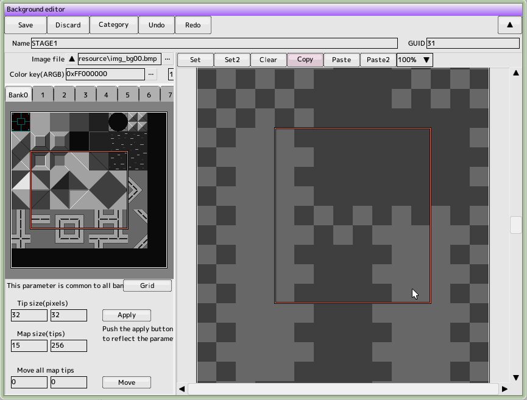

Background Editing
 Here's help for common operation of the edit window
 back to the original page
back to the original page
Next, I made sure that the tool button above the map area on the right side was set to "set Afterwards, drag it around the map. The selected chip will be placed on the map